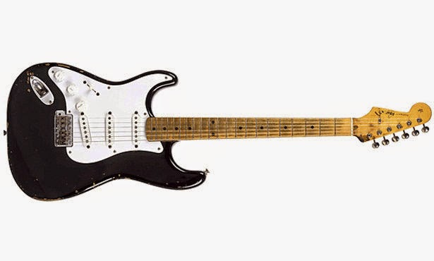
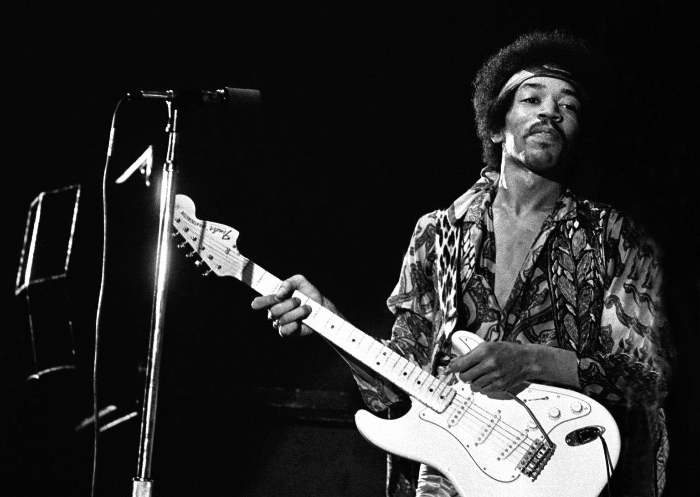
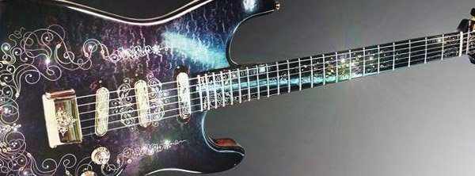
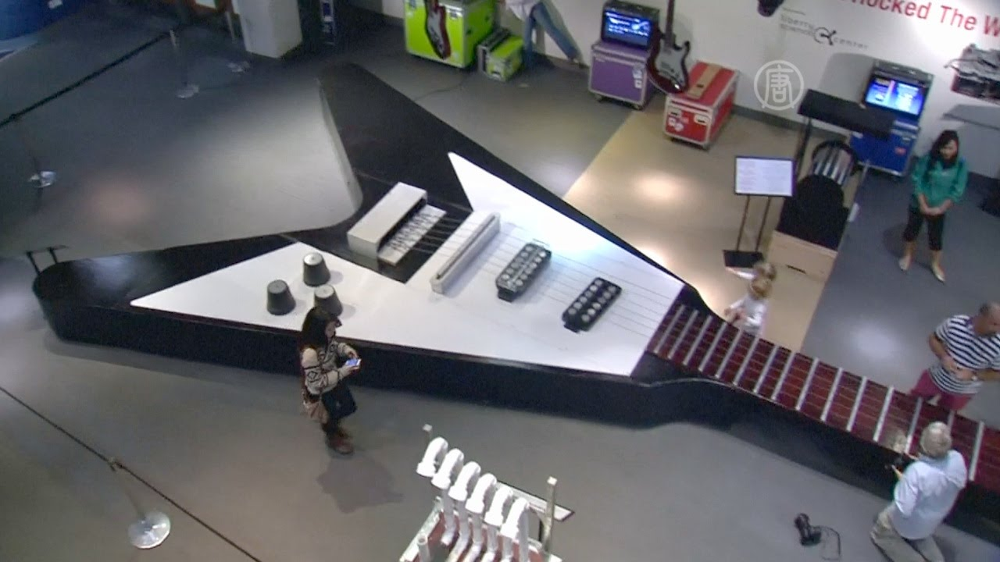
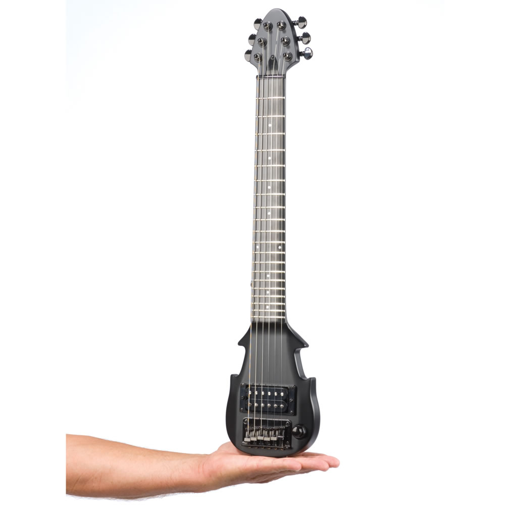

Это интересно!
1.Рекордная цена за электрогитару, составила $959,500 за стратокастер Эрика Клэптона «Blackie» который был продан с аукциона, в 2004 году.

2.В 1950 году, Лео Фендер положил гриф на два стула и встал на него сверху. Зачем? Так он проверял его прочность.
3.Вы любите свою гитару, да? Нет? Не знаете? А вот англичанин Chris Black официально женился на Stratocaster в 2001 году.
4.Вода в унитазе, в большинстве случаев, смывается в тональности «Ми»
5.Кирк Хамет из группы Metallica, был самым плохим учеником Joe Satriani
6.По опросу журнала «Rolling Stones» самым влиятельным гитаристом на все времена, является Jimi Hendrix.

7.Лютье. Так называют мастера, изготавливающего гитары.
8.Жорж Бошам и Адольф Рикенбекер – создатели первой электрогитары. Это произошло в 1931 году. Инструмент имел металлический корпус
9.Вступление песни группы «Metallica» «Nothing Else Matters» было придумано Хэтфилдом, когда он разговаривал по телефону. Так как одна рука у музыканта была занята, в песне и присутствует перебор открытых четырех струн.
10.Стоимость инструмента Fender Midnight Opulence 90 000 долларов. Это самая дорогая серийная гитара в мире.

11.В 2010 году сотрудники Академии наук и технологий Хьюстона создали электрогитару длиной 13 метров 26 сантиметров. Вес инструмента 1023 килограмм.

12.А это самая маленькая действующая электрогитара. Её длина 67,5 сантиметров.

13.Гитара Fender Stratocaster продана на благотворительном вечере за $2,8 миллиона. На ней расписались девятнадцать самых известных гитаристов мира.